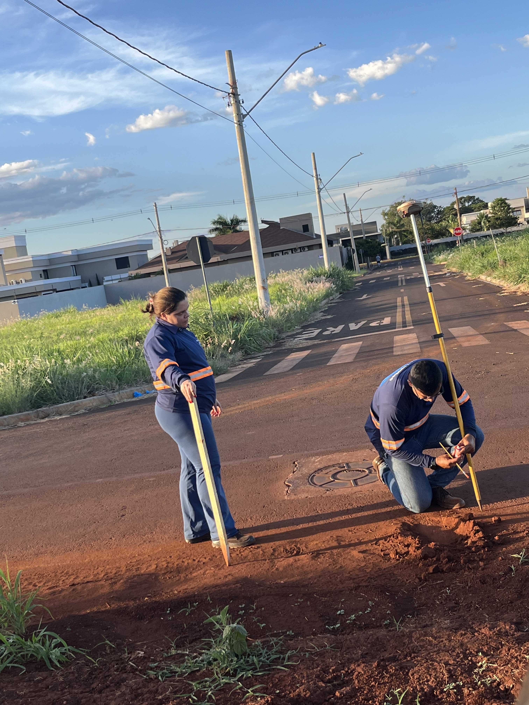

A empresa que une agrimensura clássica à Inteligência Artificial
A AJ TopoGeo nasceu com um propósito claro: entregar dados geoespaciais confiáveis com segurança jurídica e ganho real de produtividade no campo. Sediados em Sidrolândia–MS, atendemos com agilidade as regiões Centro-Oeste e Sudeste do Brasil.
Combinamos agrimensura tradicional, drones DJI Matrice 4 Enterprise com RTK/PPK, e modelos de IA (visão computacional com YOLO) para transformar imagens em informações acionáveis — do diagnóstico à entrega com ART/CFT.
Atuação Estratégica
Sidrolândia–MS, próximos ao agronegócio que mais cresce no país.
Equipe Técnica
Especialistas com responsabilidade técnica registrada no CFT.
Inovação 4.0
IA e drones de última geração para dados precisos e confiáveis.
Entrega Ágil
Fluxo rastreável do diagnóstico à entrega final com suporte técnico.